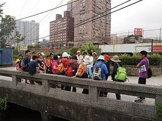
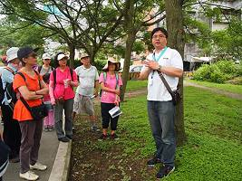
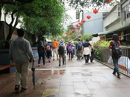

|
有人說，讀書要讀三遍，讀過、讀熟，再讀通；樹梅坑溪也是如此，我們認識樹梅坑溪，還要熟悉樹梅坑溪，並在其中發掘樹梅坑溪的美好，以及它的哀傷。
【第一場：下游篇】
帶隊老師：陳江河（社區大學講師、濕地生態達人）、江銘祥（艾奕康工程顧問水務發展部副理）
行程：從竹圍捷運站到河口，探訪樹梅坑溪下游段的生態，以及河川治理計畫，再到竹圍工作室（一個在學習與自然共生的藝術家創作基地、長期關心社區環境，推動樹梅坑溪環境藝術行動計畫）、參訪雨水回收系統、生態池。
【第二場：中游篇】
帶隊老師：林柏昌（社區大學講師、昆蟲達人）、江銘祥（艾奕康工程顧問水務發展部副理）
行程：從竹圍捷運站穿過社區、沿著馬偕步道、社區巷弄走到關渡新洋房，再沿著樹梅坑溪步道、走到妙覺寺，認識樹梅坑溪中游段的生態情形和河川治理計畫。
【第三場：上游篇】
帶隊老師：陳建興（竹圍國小自然科老師、昆蟲達人）、江銘祥（艾奕康工程顧問水務發展部副理）
行程：搭車前往上游地區，從小坪頂的秘密入口進入，從樹梅坑溪上游一直走到水源地，理解樹梅坑溪上游段的生態情形和河川治理計畫。
主辦單位：新北市政府水利局。
策劃單位：艾奕康工程顧問股份有限公司
執行單位：竹圍工作室
資料來源：樹梅坑溪的生態走讀。竹圍工作室。 |
|
 |
|
河口生態的解說 |
|
 |
|
解說河口鳥類生態 |
|
 |
|
馬偕溪流加蓋體驗 |
|